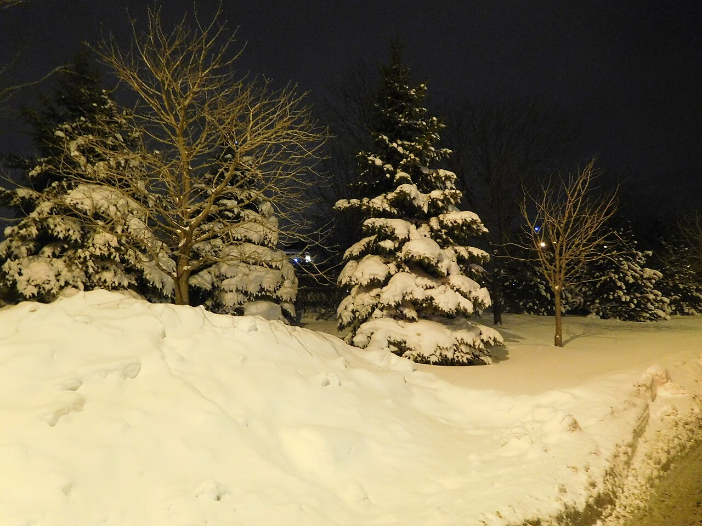

Acerca de esta página
Hice esta página para mi curso de CSS. El tema que escogí es "El invierno en Canadá" porque viví ahí un tiempo y me enamoré de su clima, más específicamente de su frío invierno.
Cosas que se hacen en invierno
- Patinar sobre hielo
- Esquiar en las montañas
- Jugar hockey
- Caminar con raquetas sobre la nieve

Créditos de las fotos
Fotos de Wikimedia Commons:
Amine Abassir (CC BY-SA 4.0), Tristan in Ottawa (CC BY-SA 2.0), Wilfredor (CC0), Jack Borno (CC BY-SA 3.0), Goran Vlacic (CC BY-SA 2.0), Fungus Guy (CC BY-SA 3.0), ShellVacationsHospitality (CC BY 2.0) y Jeangagnon (CC BY-SA 4.0)